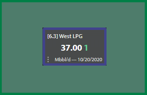
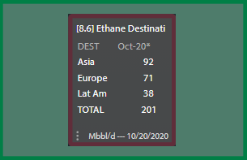

<div id="coverflow">
    
    
    
    
    
    
    
    
    
    
    
    
    
    
    
    
    
    
    
    
    
    
    
    
    
    
    
    
    
    
    
    
    
</div>

<!-- put this in your html header -->
<link rel="stylesheet" type="text/css" href="coverflow.css" />
<style>
  body {
    background-color: #505050;
    height: 100%;
  }
  #coverflow {
    position: absolute;
    width: 100%;
    top: 50%;
    transform: translateY(-50%);
  }
  #coverflow img {
    width: 400px;
    box-shadow: 0 30px 50px rgba(0,0,0,0.3)
  }
</style>
<script src="https://code.jquery.com/jquery-3.5.1.min.js" integrity="sha256-9/aliU8dGd2tb6OSsuzixeV4y/faTqgFtohetphbbj0=" crossorigin="anonymous"></script>

<!-- include coverflow after all dependencies-->
<script src="coverflow.min.js"></script>
<script>
    $(function() {
		// and kick off
        $('#coverflow').coverflow({
    visibleAside: 5,
    scale: 0.6,
	});
    });
</script>